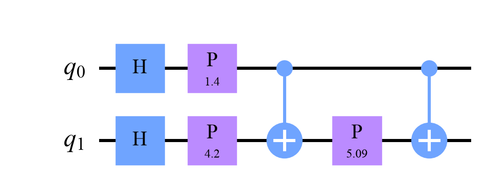
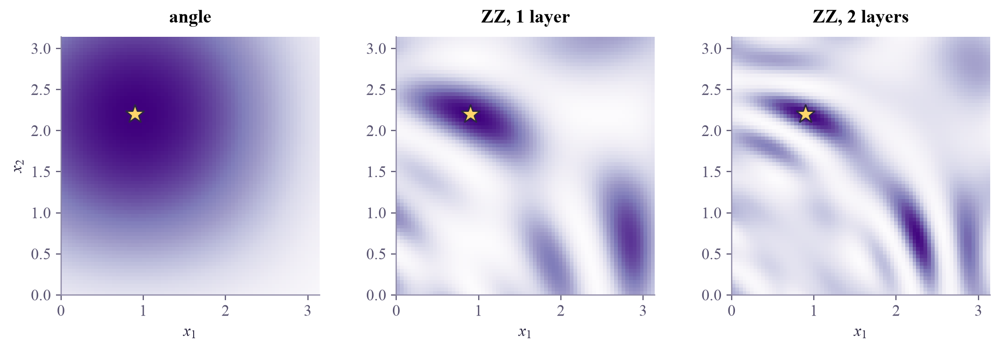

same state as Qiskit's zz_feature_map: True

Let the features talk to each other: the ZZ feature map entangles the qubits so the encoded state depends on products of features. Richer, but not automatically better.

In ML week 4, a feature map lifted the XOR data with the product , and suddenly a straight line could separate it. Angle encoding never multiplies features: each qubit only ever sees its own. Today's feature map uses entanglement to let features interact, and it's the one behind the most famous quantum-kernel experiment.
A quantum feature map is any circuit that encodes into . The ZZ feature map repeats one layer:
The pair phase is where features interact, and it usually entangles the qubits: one qubit alone is then a mixed state. Qiskit has it ready-made: zz_feature_map(n, reps=2). It was used by Havlíček and coauthors in 2019 for one of the first quantum-kernel experiments on IBM hardware.
Similarity landscapes. Fix one input and color every other by the kernel (next week's main character). Angle encoding gives smooth bumps, a product of one bump per feature. The ZZ map gives twisted, mixed patterns; with more layers they get wigglier.
Richer isn't automatically better. A wiggly similarity can make nearby points look unrelated, and a model built on it generalizes badly: the same overfitting story as a too-narrow RBF kernel (ML week 4). The right feature map is the one that suits the data, and it's rarely obvious in advance.
Entangling feature maps let features interact through products, which can help, or just add wiggles: judge them on held-out data.
Drag the star to choose a reference input. The color shows how similar every other input's encoded state is to the star's. The dots are an XOR dataset.
With angle encoding, move the star around: one smooth bump, centered on it. Switch to the ZZ map: the similar region twists, and for most stars the purity drops below 1 (entanglement). With two layers, find a spot where points right next to the star look quite different from it.
qml-w1d4.ipynb. To change the code and run it yourself, open the notebook in Google Colab (free, in your browser) or download it for your own Jupyter.import numpy as np
import matplotlib.pyplot as plt
from qiskit import QuantumCircuit
from qiskit.circuit.library import zz_feature_map
from qiskit.quantum_info import Statevector, state_fidelity, partial_trace
def zz_map(x, reps=2):
qc = QuantumCircuit(2)
for _ in range(reps):
qc.h([0, 1])
qc.p(2 * x[0], 0)
qc.p(2 * x[1], 1)
qc.cx(0, 1)
qc.p(2 * (np.pi - x[0]) * (np.pi - x[1]), 1) # a phase that depends on BOTH features
qc.cx(0, 1)
return qc
x = np.array([0.7, 2.1])
library = zz_feature_map(2, reps=2).assign_parameters(x) # Qiskit's version
print("same state as Qiskit's zz_feature_map:", np.isclose(state_fidelity(Statevector(zz_map(x)), Statevector(library)), 1))
zz_map(x, reps=1).draw("mpl", style="clifford")same state as Qiskit's zz_feature_map: True

def angle_map(x):
qc = QuantumCircuit(2)
qc.ry(x[0], 0)
qc.ry(x[1], 1)
return qc
rng = np.random.default_rng(0)
for name, fmap in [("angle", angle_map), ("ZZ", zz_map)]:
purities = [partial_trace(Statevector(fmap(rng.uniform(0, np.pi, 2))), [1]).purity().real for _ in range(200)]
print(f"{name:5s}: purity of qubit 0 alone, over 200 random inputs: min {min(purities):.3f}, mean {np.mean(purities):.3f}")angle: purity of qubit 0 alone, over 200 random inputs: min 1.000, mean 1.000 ZZ : purity of qubit 0 alone, over 200 random inputs: min 0.517, mean 0.868
grid = np.linspace(0, np.pi, 70)
ref = np.array([0.9, 2.2])
fig, axes = plt.subplots(1, 3, figsize=(10, 3.3), layout="constrained")
for ax, (name, fmap) in zip(axes, [("angle", angle_map), ("ZZ, 1 layer", lambda x: zz_map(x, 1)), ("ZZ, 2 layers", zz_map)]):
r = Statevector(fmap(ref))
K = np.array([[abs(Statevector(fmap([a, b])).inner(r)) ** 2 for a in grid] for b in grid])
ax.imshow(K, origin="lower", extent=[0, np.pi, 0, np.pi], cmap="Purples", vmin=0, vmax=1)
ax.plot(*ref, "*", ms=14, color="#ffd66b", mec="#2c2842")
ax.set_title(name)
ax.set_xlabel(r"$x_1$")
ax.grid(False)
axes[0].set_ylabel(r"$x_2$")
plt.show()
Train an SVM with the kernel of each feature map on XOR data and compare test accuracies.
from sklearn.svm import SVC
def xor_data(n, seed):
r = np.random.default_rng(seed)
X = r.uniform(0, np.pi, (n, 2))
return X, ((X[:, 0] > np.pi / 2) ^ (X[:, 1] > np.pi / 2)).astype(int)
X_train, y_train = xor_data(80, 1)
X_test, y_test = xor_data(200, 2)
def kernel(fmap, A, B):
SA = np.array([Statevector(fmap(a)).data for a in A])
SB = np.array([Statevector(fmap(b)).data for b in B])
return np.abs(SA.conj() @ SB.T) ** 2
for name, fmap in [("angle", angle_map), ("ZZ, 1 layer", lambda x: zz_map(x, 1)), ("ZZ, 2 layers", zz_map)]:
pass # TODO: fit SVC(kernel="precomputed", C=10) on kernel(fmap, X_train, X_train); score on kernel(fmap, X_test, X_train)Exactly ML week 4's recipe: SVC(kernel="precomputed", C=10).fit(kernel(fmap, X_train, X_train), y_train), then .score(kernel(fmap, X_test, X_train), y_test).
for name, fmap in [("angle", angle_map), ("ZZ, 1 layer", lambda x: zz_map(x, 1)), ("ZZ, 2 layers", zz_map)]:
model = SVC(kernel="precomputed", C=10).fit(kernel(fmap, X_train, X_train), y_train)
print(f"{name:13s} test accuracy {model.score(kernel(fmap, X_test, X_train), y_test):.3f}")
print("More entanglement isn't automatically better: the two-layer ZZ map's similarity is so wiggly that")
print("the SVM generalizes worse here. A feature map has to suit the data.")angle test accuracy 0.900 ZZ, 1 layer test accuracy 0.900 ZZ, 2 layers test accuracy 0.745 More entanglement isn't automatically better: the two-layer ZZ map's similarity is so wiggly that the SVM generalizes worse here. A feature map has to suit the data.
Why use quantum feature maps at all, if classical ones work? The hope is maps that are hard to simulate classically yet suit real data. Hardness alone isn't enough, though: a map can be hard to simulate and useless for learning. Finding maps that are both is an open question.
Havlíček and coauthors, "Supervised learning with quantum-enhanced feature spaces" (Nature, 2019), introduced the ZZ feature map and the quantum-kernel experiment. Schuld and Killoran, "Quantum machine learning in feature Hilbert spaces" (Physical Review Letters, 2019), made the link to classical kernel methods.
Next in Quantum ML: how to measure the similarity of two states on a real quantum computer.

Tap the button to save it. Short and steady wins.